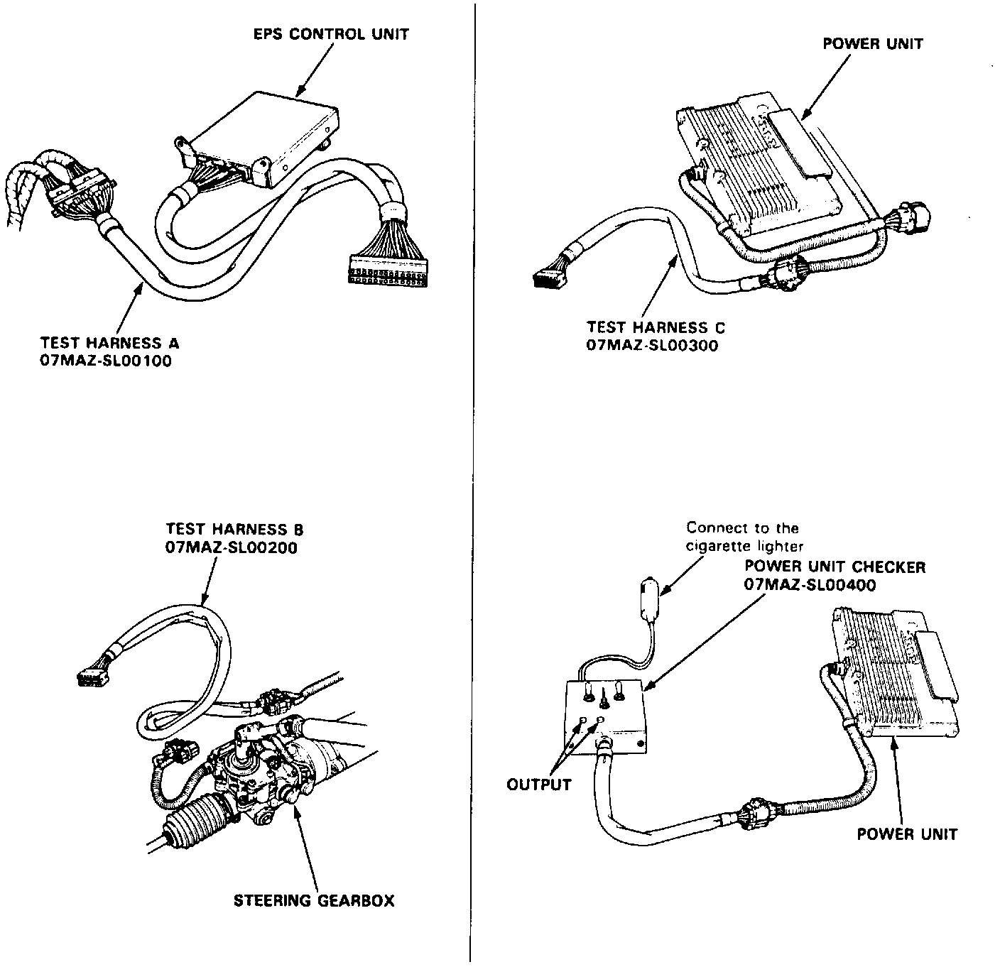

Electric Power Steering Test Set (07MAJ-SL0000A)

This tool will not be automatically shipped to Acura dealers. You may not need it because very few NSXs have power steering (only those with A/T). A limited number of test sets are available for ordering. If you prefer, we can also lend you a set to help diagnose a specific power steering problem. The set, T/N 07MAJ-SL0000A, includes the three test harnesses and power unit checker shown below. How to connect the harnesses is shown and in the Service Manual on page 17-45. How to use them is described on Troubleshooting pages 17-46 through 61.
Disclaimer: The products, manufacturers, and suppliers listed in this bulletin are brought to your attention solely for your own information and investigation. American Honda disclaims any responsibility for these products. Listings are based on information supplied by the tool manufacturers.